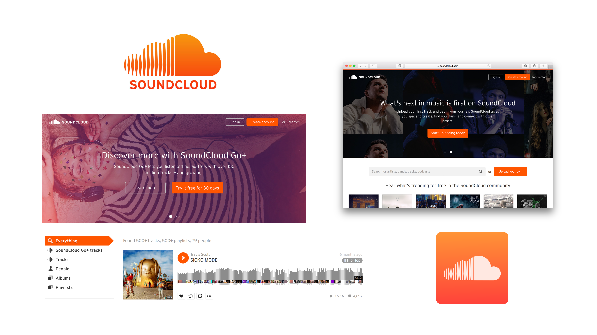
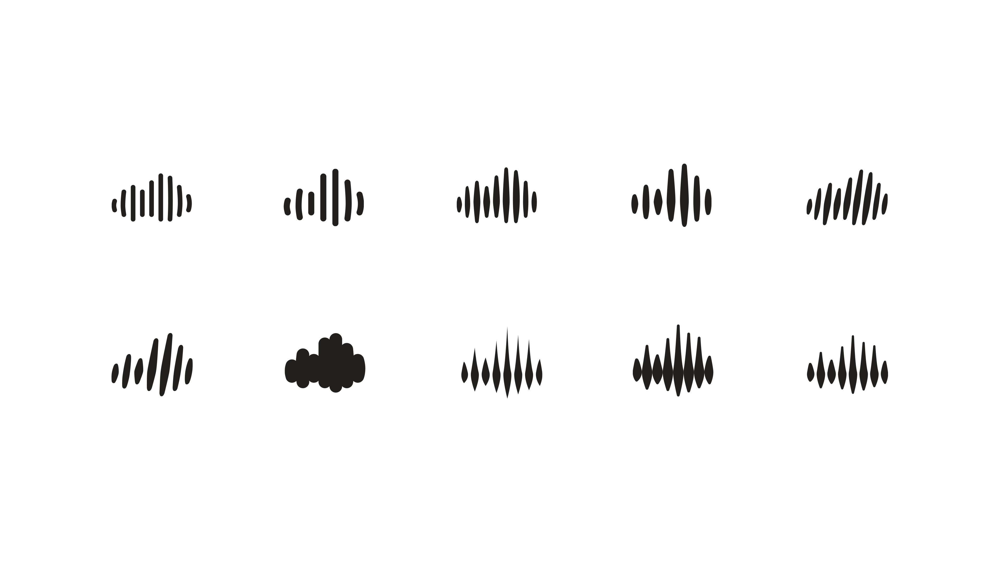
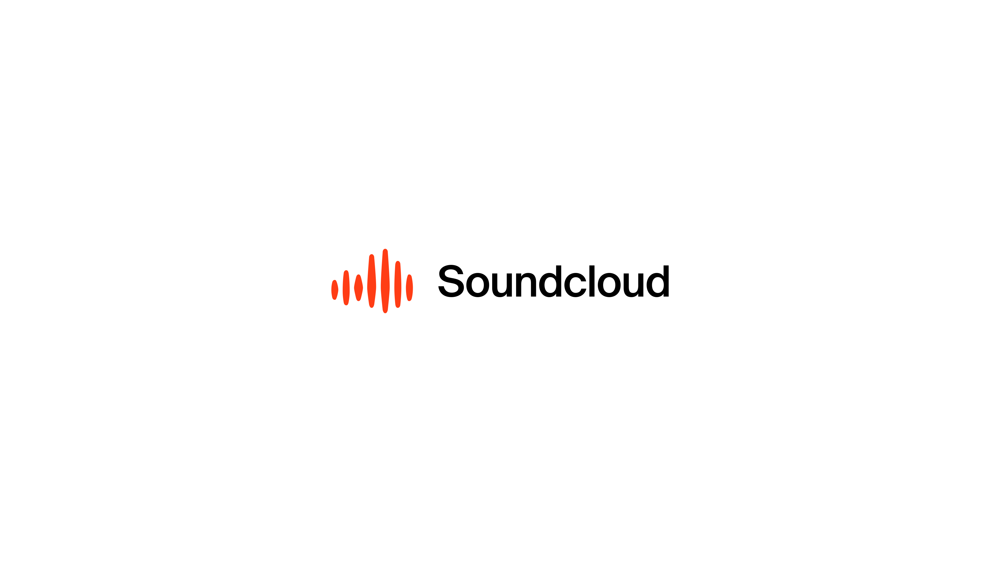
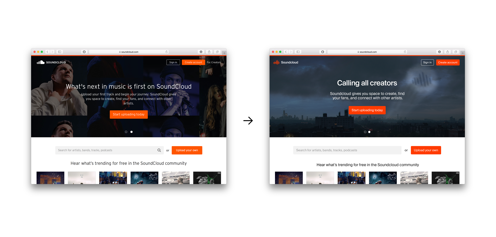
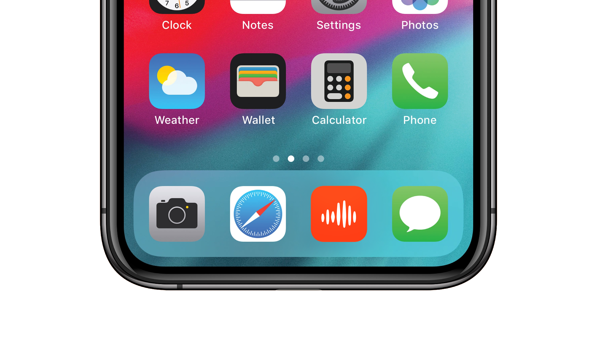

KLEINER PERKINS DESIGN FELLOWS CHALLENGE
SoundCloud gets with the times
_
OVERVIEW
The music distribution space is packed with tech giants eager to separate from the competition. Spotify and Apple Music lead the way with streaming platforms serving curated playlists to millions of listeners weekly. Tidal touts itself as a home for artists looking to take advantage of high-quality audio content and exclusive releases. Pandora and iHeartRadio continue to deliver streams and podcasts to a sizeable chunk of the market. And then there's SoundCloud.
The platform, released in 2007 as an audio-sharing service reliant on user-uploaded content, finds itself at a period of transition. Recent years have seen the service (itching for monetization of some kind) pivot into the streaming space with the launch of SoundCloud Go+ in 2017 to little fanfare. While the service granted paying users offline access to ad-free content, many saw it as a late, unoriginal move. Executive turnovers followed, and the company now seems desparate for innovation and differentiation from the rest. At this point, it's a matter of survival.
PROBLEM
An audit of SoundCloud's current condition reveals a company juggling the needs of listeners and creators alike. The service grew as a home for independent artists to deliver a range of exclusive content directly to fans in hopes of growing a following. It even spawned its own subgenre of music, enabling a generation of "SoundCloud rappers" to gain streams by the millions (and industry attention with it). The content housed on the platform brims with energy, range, and rawness. Yet, the brand has remained more-or-less stagnant. The white logo on an orange gradient still graces the home page as it did when SoundCloud first launched. As a whole, the identity feels tired and outdated.

Today's SoundCloud
A brand revamp gives SoundCloud the opportunity to clarify its core values with a cohesive identity that reflects the bold energy of its users and further allows the platform to put a cultural stamp on the music world.
THE MOOD
The moodboard was developed to pinpoint an initial visual direction and character for the identity. It borrows from a range of influences prominent among the demographic of core SoundCloud users that trends on the younger (18–24) side, as well as album covers and visuals from today's industry-dominant artists.

Selection from mood board
THE CLOUD
SoundCloud's current logo feels like a missed opportunity. The half-waveform, half-cloud serves to illustrate the company's name verbatim (half sound, half cloud). It feels like the equivalent of overexplaining a joke. The updated mark looks to make use of the sound waveforms that sit beside content on the site, while taking the overall shape of a cloud in a simpler, more concise form. It's a soundcloud.
Current SoundCloud logo

Logo exploration

Final logomark
THE NAME
As part of the rebrand, the "SoundCloud" capitalization changes to "Soundcloud" to better reflect the mark as an object (a soundcloud). Compared to the all-caps appearance of the old logo, the updated wordmark is in the less-static capital case using Suisse Int'l. Together with the logomark and a more-vibrant shade of orange, the logo as a whole takes on a fresher, bolder look.
Wordmark and typeface
Logo spacing

Final logo and color options
THE BRACKET
To complement the logo and enable the identity to persist across a range of applications (both with and without the logo's inclusion), the bracket () emerges. If the soundcloud is a collection of content (the waves representing a song, the songs generated by an artist, etc.), the bracket surrounds it, delineating a space for musical experiences. The following are a few applications of the identity system:

The bracket in use

Updated website (logo and typography replaced from old site)

Updated app icon
Logo in use
The new identity system opens the door for use in a wider range of contexts and environments, lending a bolder, more vibrant feel to the brand. Further work could look to expand the clean, cohesive look of the identity across Soundcloud's various web and mobile applications to cultivate an all-around improved experience. It's a move to emphasize the platform's commitment to staying at the forefront of a culture tailored to independent creators around the world. It's a move to emphasize that Soundcloud is here to stay.